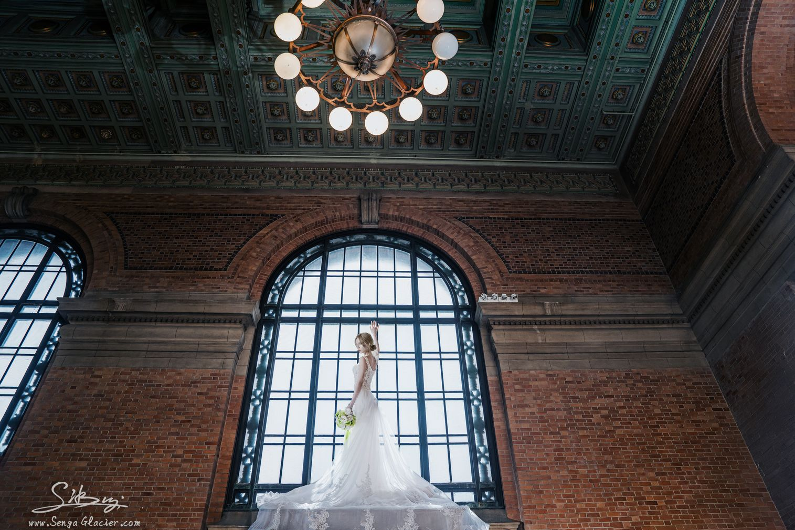
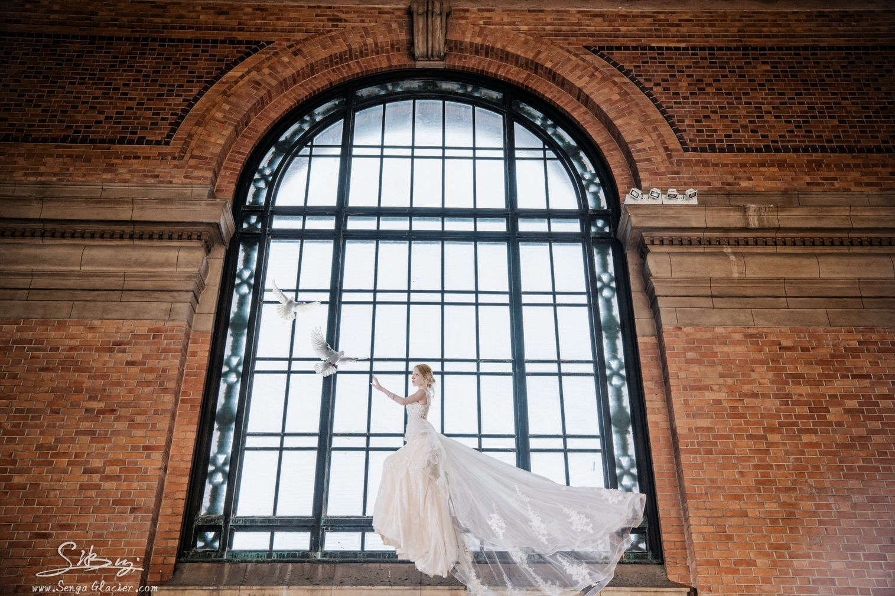
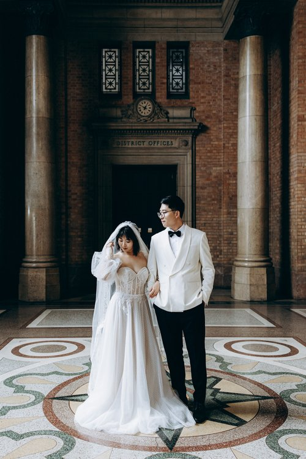
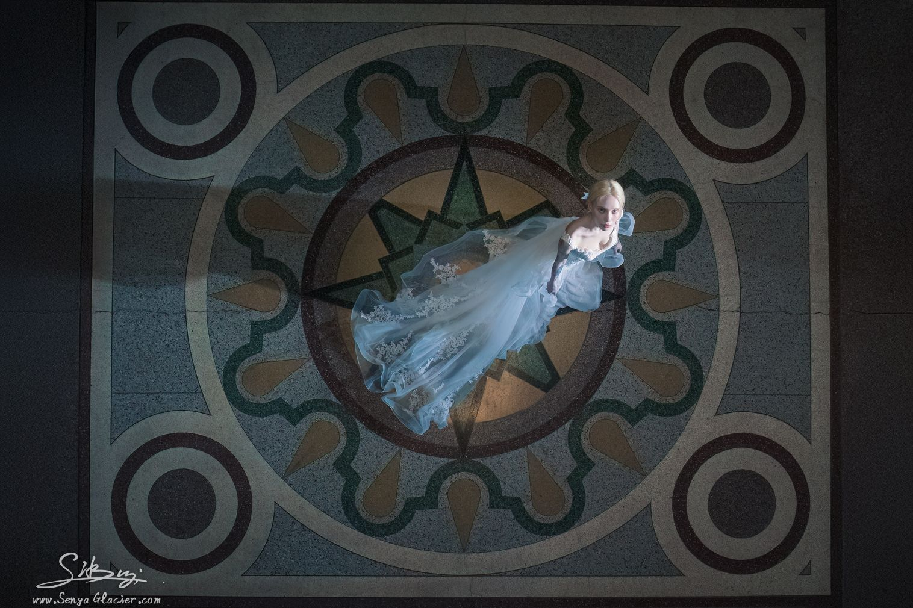
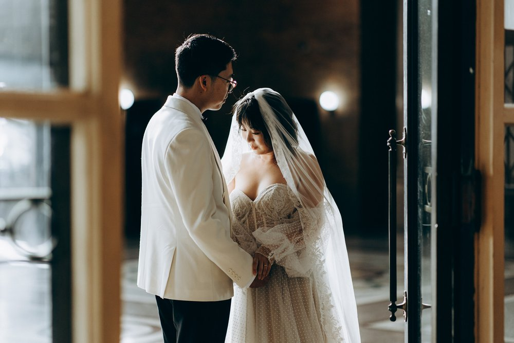
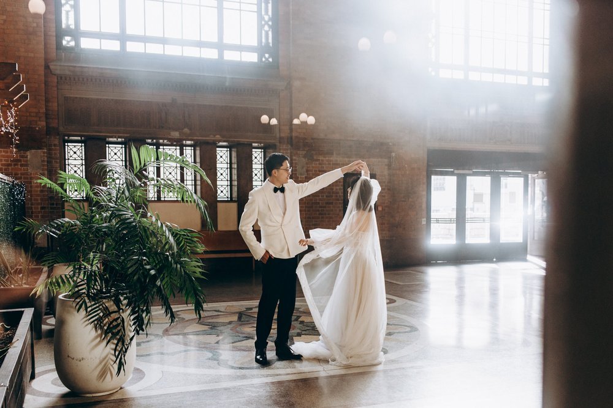
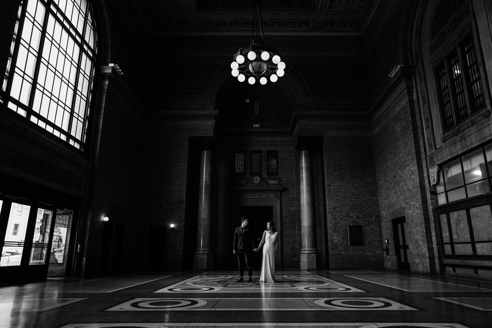
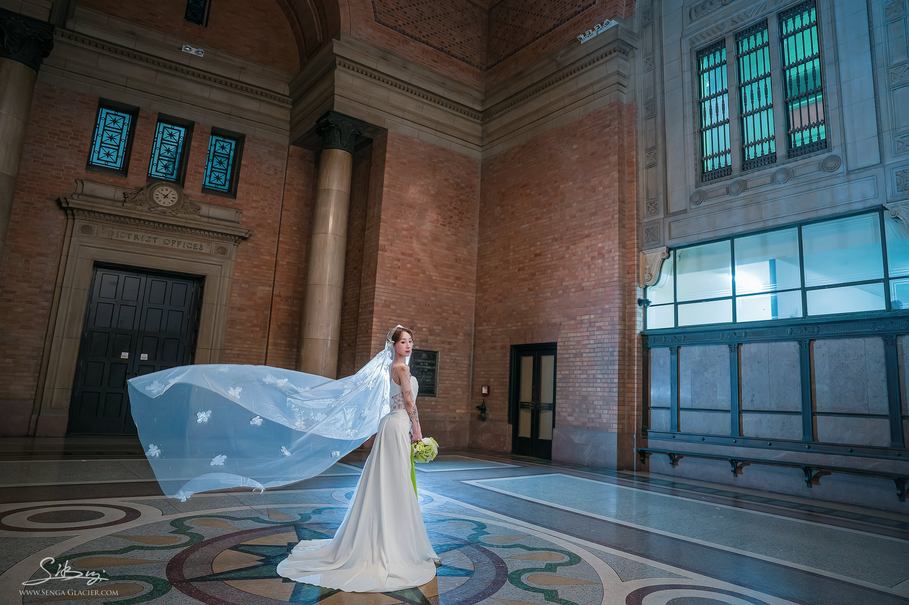
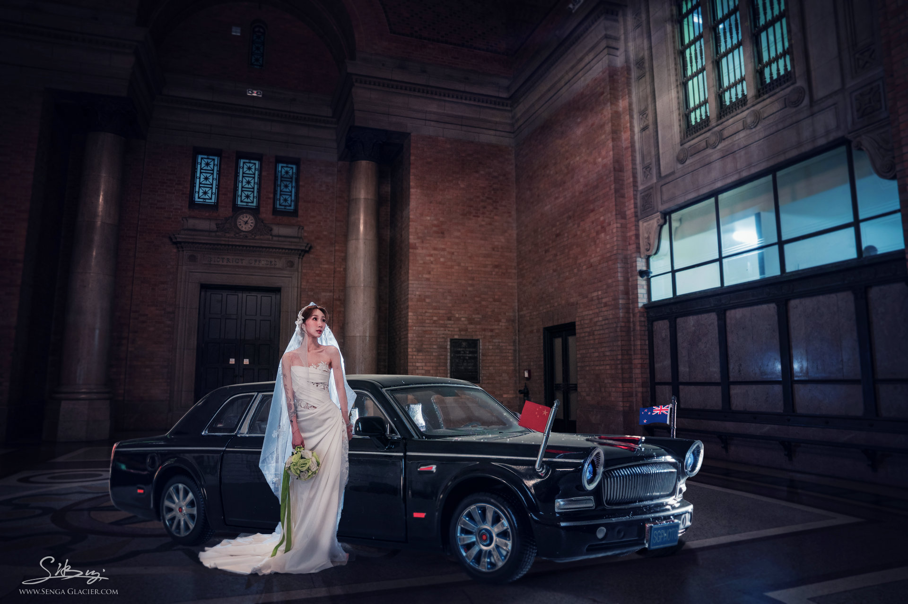
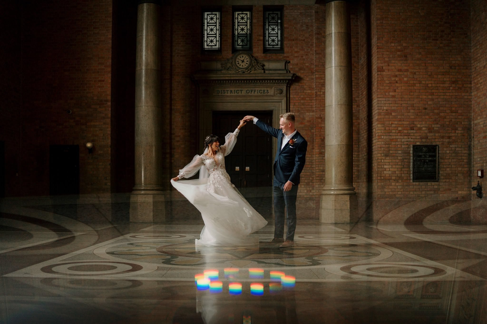

Grand Hall
For ceremonies, larger receptions and dramatic portraits beneath the chandeliers.
View the Grand Hall
Weddings at Grand Central
Heritage halls, cinematic light and room to celebrate in the heart of Auckland
Your celebration at the station
Grand Central brings ceremony, portraits and celebration together beneath one historic roof. The Grand Hall offers scale and theatre, while the Grand Foyer and surrounding rooms create quieter moments throughout the day.
On-site accommodation and Saffron restaurant make it easier for couples and guests to settle in, celebrate and stay close.
The setting
Terrazzo floors, chandeliers, brick arches and natural light give every part of the building its own character.










Plan the day
Arrange a viewing with the venue team to discuss the flow of your ceremony, photography and celebration.
For ceremonies, larger receptions and dramatic portraits beneath the chandeliers.
View the Grand HallFor arrivals, drinks, photographs and the quieter transitions between each part of the day.
View the Grand FoyerKeep guests nearby with accommodation upstairs and dining at Saffron within the building.
Begin planning
Tell the venue team about your date, guest numbers and the kind of celebration you have in mind.